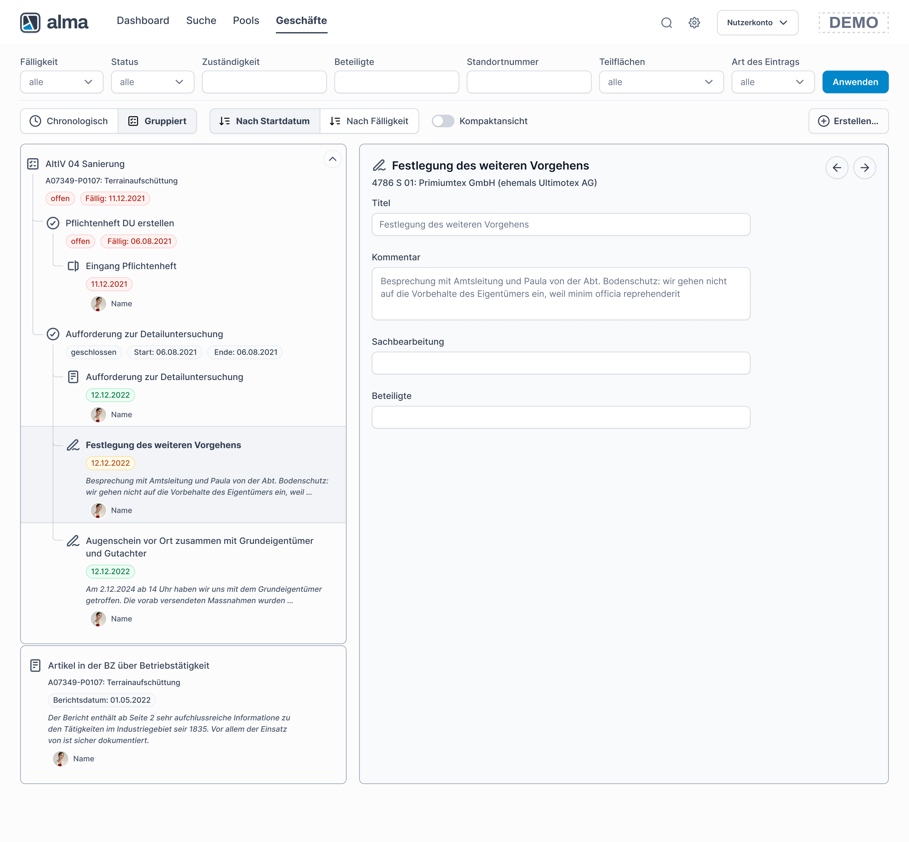
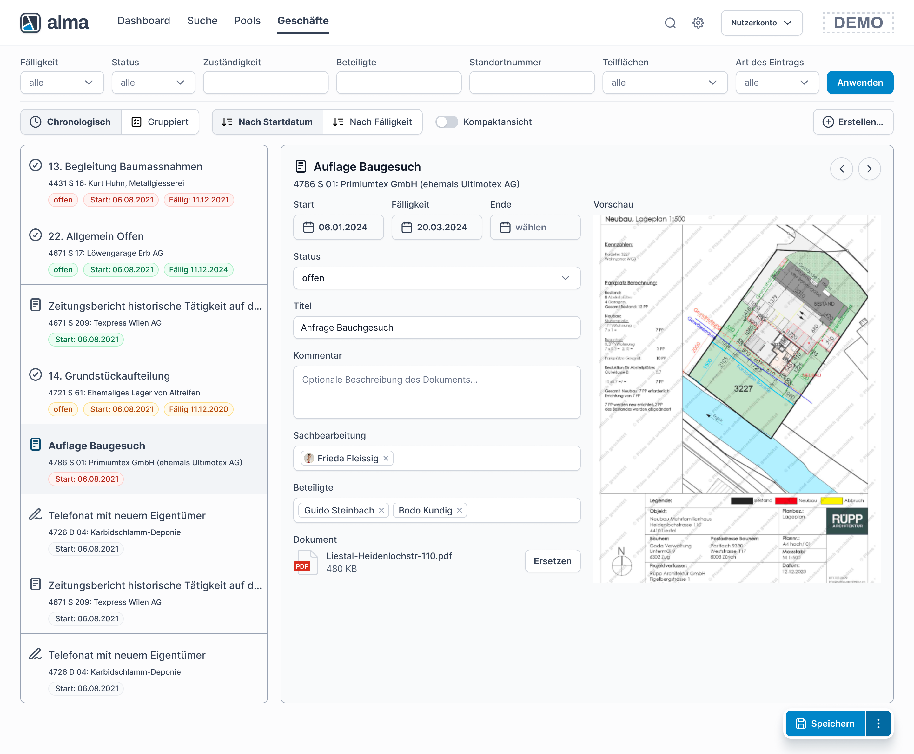
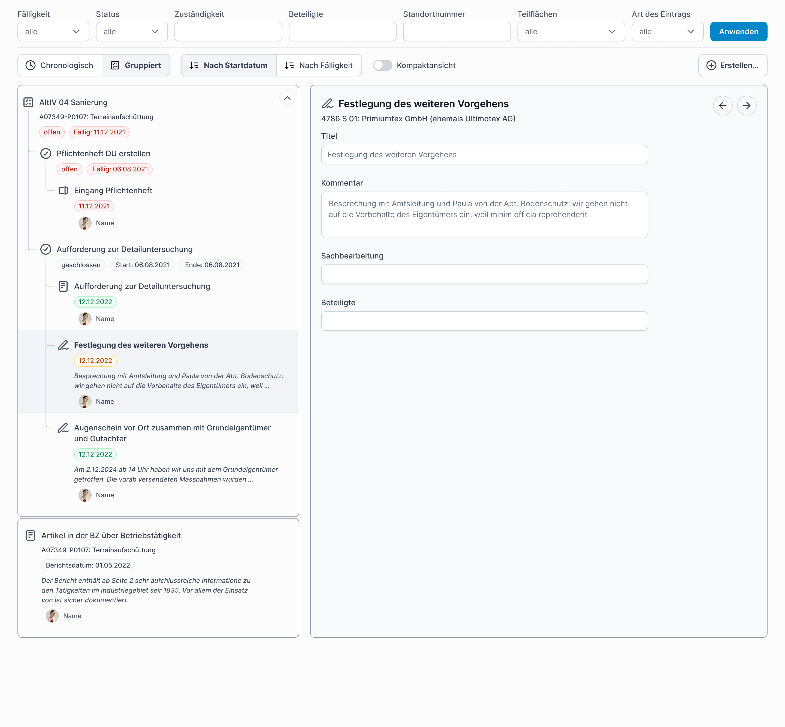

Alma
Gemeinsam. Sicher. Open-Source.

Project overview
About Alma
alma is a modern, web-based, open-source solution designed to support government authorities in managing the Cadastre of Contaminated Sites (KbS). Operating under the philosophy “Together. Secure. Open-Source.”, the platform covers the entire lifecycle of a geographical site—from initial data collection and environmental assessment to official publication.
What i did
I led the visual redesign of 50% of alma’s existing Design System. The client’s primary objective was to enhance visual contrast and establish clearer hierarchies to significantly improve the overall user experience. Working closely with the development team, I prototyped and tested various data visualization methods—including virtual scrolling, pagination, and endless scrolling—to simplify complex information and create more intuitive data groupings.
The Challenges
Optimizing an Existing System
The challenge wasn’t building from scratch, but rather auditing and upgrading 50% of an established Design System. The client needed stronger visual contrast and clearer information hierarchies without losing the platform’s core identity.
Balancing Data Density with Performance
Government officials process massive amounts of cadastral data. The system needed a way to display heavy data tables efficiently without compromising browser performance or overwhelming the user.
Maximizing Screen Real Estate
Complex administrative tools require maximum workspace. The challenge was to keep global navigation accessible while ensuring it didn’t consume valuable screen space during deep-focus tasks.

Enhanced Accessibility & Cognitive Focus
By restructuring the color hierarchies and transitioning to a cohesive, monochromatic icon system, we significantly reduced visual noise and cognitive load, making the platform more accessible for daily use.

High-Performance Data Visualization
Through close collaboration and prototyping with the development team, we successfully implemented optimal data-loading methods (such as virtual scrolling and pagination). This drastically improved the system’s performance and made data scanning much more intuitive.

Streamlined Workspace
The introduction of a smart, auto-hiding menu bar maximized the active screen area. Users can now immerse themselves in complex data management, with navigation seamlessly reappearing only when needed.